Localization In Simulation Test
I tested the localization in simulation first.
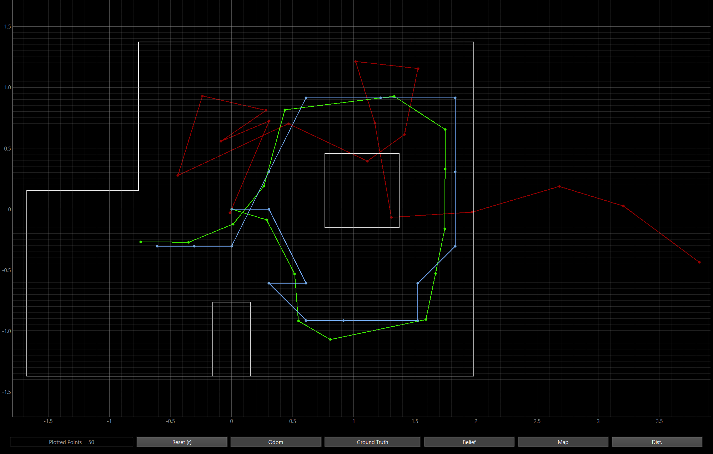
The odometry is in red, the ground truth is in green, and the belief is in blue. As you can see, the odometry is very unreliable and goes outside the map. The belief trajectory is similar to what we saw in lab 10, which is slightly off from the ground truth, which means the algorithm is working as it should.
Implementation on Real Robot
Using the orientation control command I made for lab 9, I set the robot to pivot 20 degrees, 18 times, and pausing each time to get a ToF measurement. Just like what happened in lab 9, my robot had a really hard time getting its right motor up to speed. I tried to multiply its PWM, but there seems to be a sticking point that stops the right wheels from spinning quick enough. I accounted for this by just pivoting about the right front wheel. I used motor braking to hold the right wheels in place while the left wheels spun the robot around. You can see this in the video below.
With my orientation control code working, I needed to implement the RealRobot Class which is used by the Localization class to communicate with the real robot. Using the notification_handler function I made in lab 1, I was able to get the readings from the robot. As you can see below, I have a data_array for the sensor data from the IMU and ToF sensor. It is then split and converted to floats to be put in their own arrays, sensor_ranges and sensor_bearings, which were converted into numpy column arrays as required by the provided localization code. Overall, I basically am just running the orientation control command and then waiting for the IMU and ToF sensor data to populate self.data_array. I also converted the ToF sensor measurements from millimeters to meters.
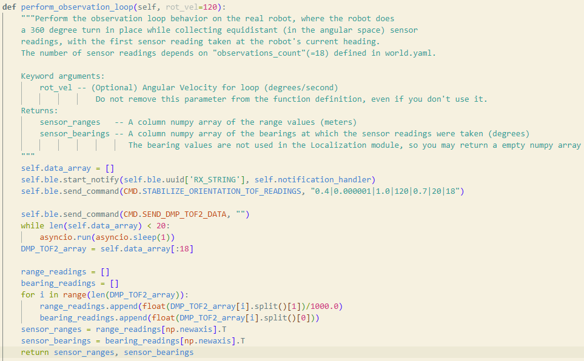
The notification_handler below handles receiving the data. It fills the instance variable self.data_array as mentioned above.
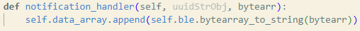
I then implemented the get_pose function. Since there is no automated method to get the real robot's ground truth pose, I used the 4 marked positions in the map and used those as the reference ground truth positions to be plotted on the map. The x and y values are in meters and I can manually input which location I want to refer to based on the location parameter. I referenced Lalo Esparza's Lab 11 web page for this.
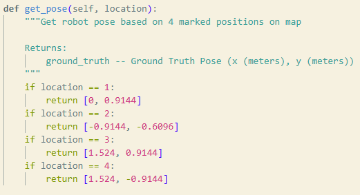
Results:
For all the plotted maps, the green dots represent the ground truth marked position and the blue dots represent the belief position.
Localization at Position (-3 feet, -2 feet) or (-0.9144 m, -0.6096 m):
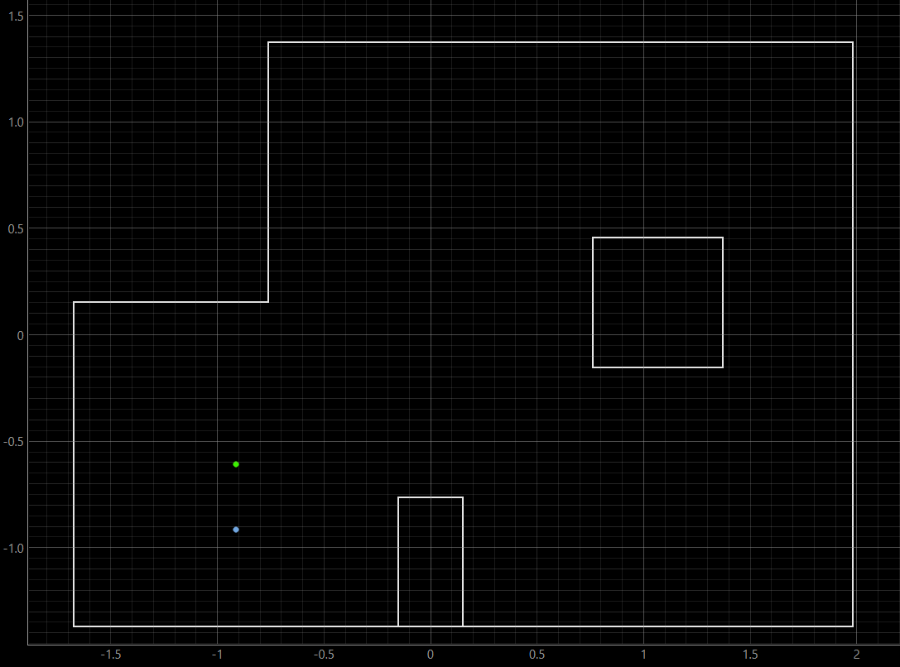
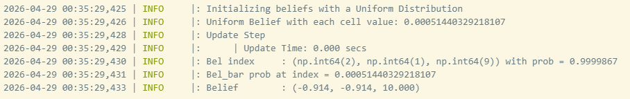
The distance between the true pose and belief was 0.3044 meters. The belief probability was 0.9999867.
Localization at Position (5 feet, 3 feet) or (1.524 m, 0.9144 m):
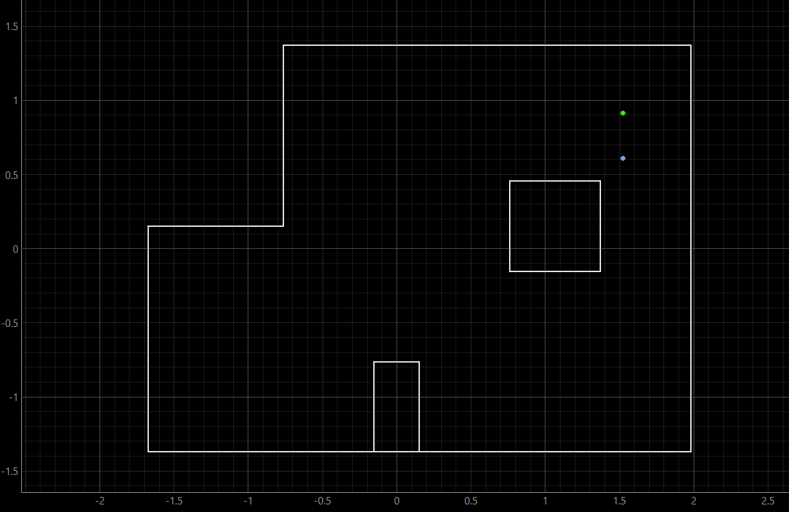
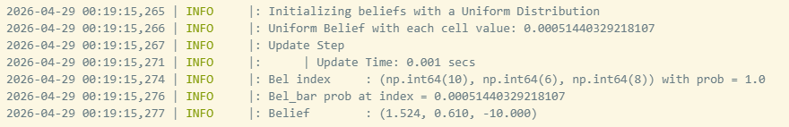
The distance between the true pose and belief was 0.3044 meters. The belief probability was basically 1.
Localization at Position (5 feet, -3 feet) or (1.524 m, -0.9144 m):
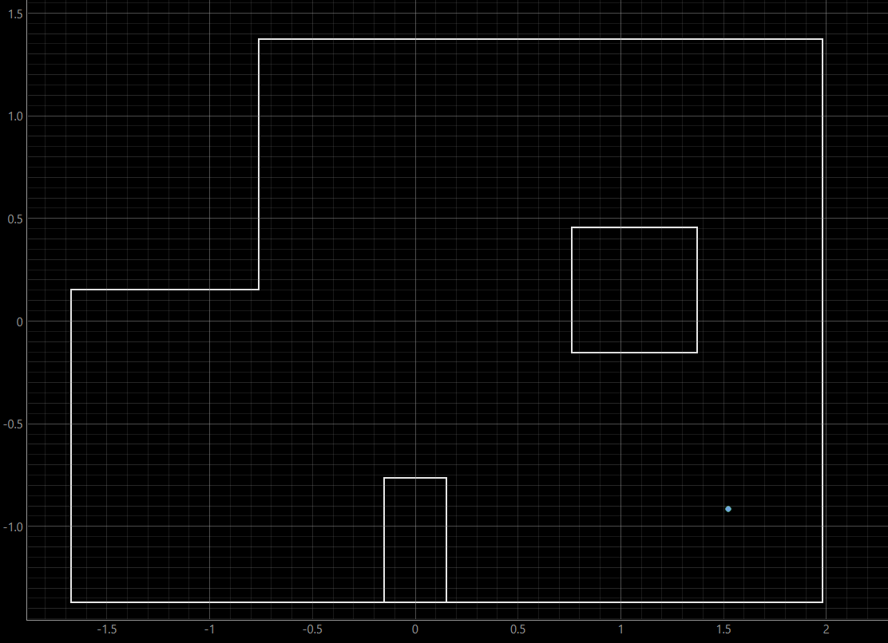
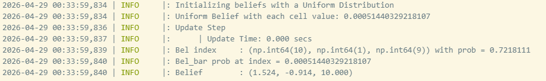
The distance between the true pose and belief was 0 meters. The belief probability was 0.7218. This was interesting that the belief was perfect. It was interesting to see a lower belief probability, but perfect belief position.
Localization at Position (0 ft, 3 ft) or (0 m, 0.9144 m):
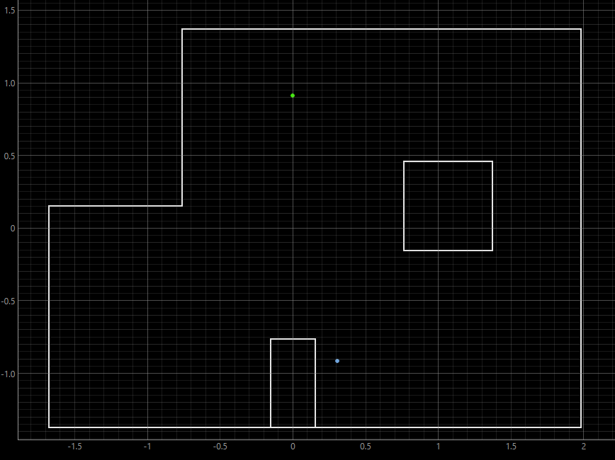
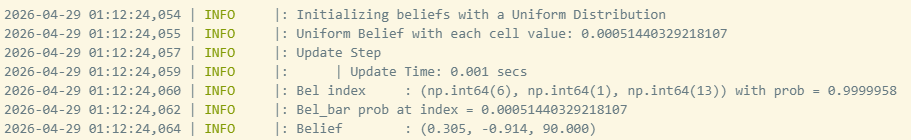
The distance between the true pose and belief pose was 1.8537 meters. The belief probability was 0.9999958. This was interesting because the belief has an angular orientation of 90 degrees which is much different than the 10 to -10 degree orientations of the beliefs above. This made me curious about how my data was so different than perfect simulator data, so I went into the simulator and got range data near (0, 3).
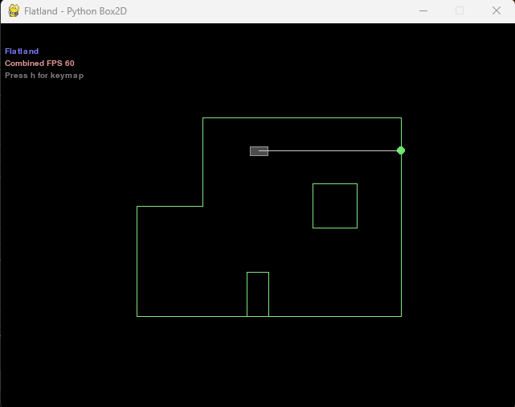
I got the range data below from the robot position above.
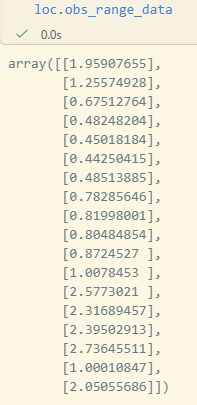
Then I used that data to get a belief position below
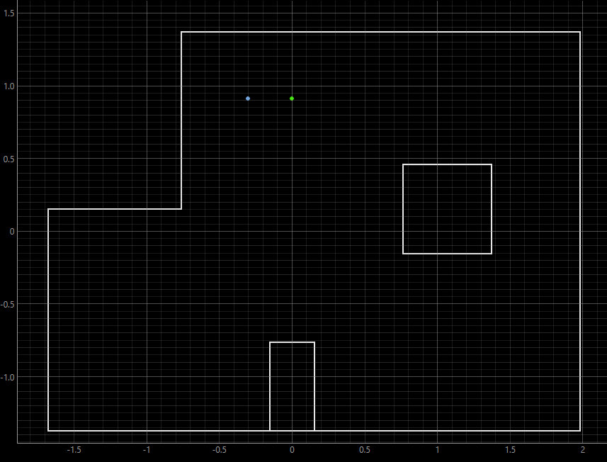
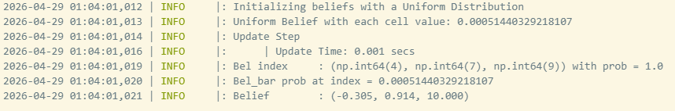
The distance is far closer at 0.305 meters and the belief's orientation is similar to the other beliefs above, at 10 degrees. Looking at the data I got from my robot, I got these range readings at (0 ft, 3 ft):
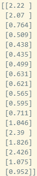
The biggest range differences seem to be at the ends where the simulated robot reads a range of 2.05 meters and my robot reads a range of 0.952 meters. This probably has to do with inaccuracies with the ToF sensor and the actual walls of the course not being perfectly lined up like in the simulator, because when I plotted out the full map of all the range data, the map produced was pretty close to what the actual map looks like. However, there are obvious outliers and inaccuracies, especially near the island in the middle of the map.

It seems that when getting the range data at position (0, 3), the robot ended up catching different points along the walls which could be from the angular orientation inaccuracies since my code had the robot stop if it was within 0.5 degrees of the 20 degree increments. You can also see that as the ToF sensor needs to read far distances, like the green dot reading at around (2500, 600), the ToF sensor is far off compared to the closer ToF sensor readings from the blue dots on the upper right corner of the map. This could be from how my sensor isn't perfectly perendicular with floor since the ToF sensor is mounted with just double sided tape on the front of the robot. This could cause larger inaccuracies, the further the sensor is away since the sensor is basically getting a hypoteneuse of the range since the ToF sensor is angled up.
One thing I noticed is that at positions (-3, -2), (5, 3), and the simulated run at (0, 3), the belief position would only be different on one axis. So it was either a vertical or horizontal translation and that was it. The belief positions also interestingly biased one side vs another like at (-3, -2) where the belief position was very close to the south most wall, which is odd since in the final mapping, you can see that the wall to the north of (-3, -2) seems to actually be closer than the southern wall. It could be because of the stray red dot on the northern side of the peninsula to the east of (-3, -2) that caused the robot to localize down further since if you look at the simulator map, the peninsula doesn't block a ray going directly east from (-0.9144 m, -0.6096 m). These small discrepencies are probably why the beliefs are shifted a bit from the truth poses
Overall, the robot localized the best at positions (-3, -2), (5, 3), and (5, -3). The robot localized quite well at these positions and even got a perfect localization at (5, -3). However, something was off about position (0, 3) whether that be because of inaccurate sensor readings, issues with the physical setup of the robot, issues with the physical setup of the obstacle course, etc., the robot localized very poorly at that position.
References
I referenced Lalo Esparza's website: https://he249619.github.io/fastrobots-2026/Pages/Lab11.html, to help me with implementing the get_pose function.